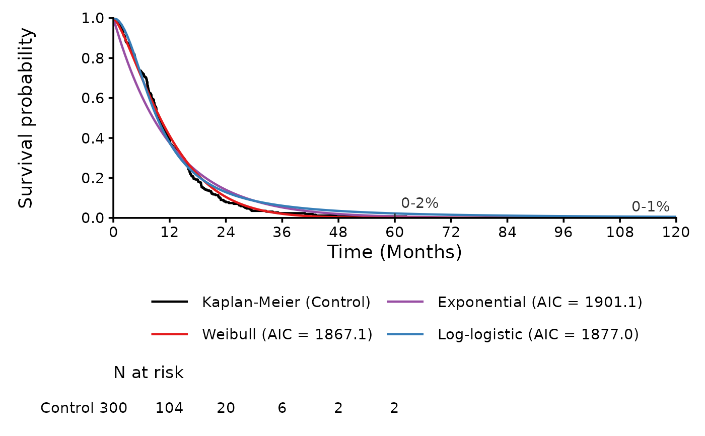
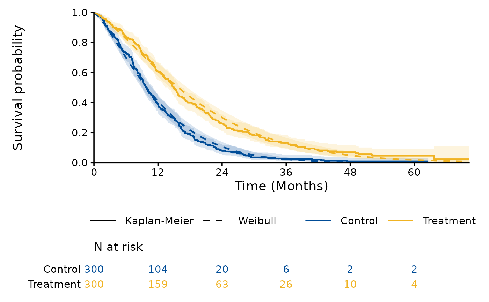

Kaplan-Meier Curves with Fitted Survival Curves
Source:R/plot_survival_fits.R
plot_survival_fits.RdPlots the Kaplan-Meier curve with the survival curves of fitted parametric or spline models, extrapolated to a time horizon, with the numbers at risk below the plot. Two layouts are available:
one arm with one or more models: the Kaplan-Meier curve is black and each model has its colour, with its AIC in the legend (for example
"Log-logistic (AIC = 1300.7)");one model with one or more arms: each arm has its colour, the Kaplan-Meier curve is solid and the model dashed.
The Kaplan-Meier curves end at the largest observed time of each arm, and the axes start at (0, 0).
Usage
plot_survival_fits(
x,
models = NULL,
arms = NULL,
fit_type = c("independent", "dependent"),
conf_int = FALSE,
time_horizon = NULL,
risk_table = TRUE,
y_label = "Survival probability",
break_by = NULL,
n_points = 200,
n_sim = 1000,
seed = 1,
legend_position = c("bottom", "right", "top", "left", "none"),
colours = NULL,
linetypes = NULL,
text_sizes = NULL
)Arguments
- x
Object returned by
fit_survival_models.- models
NULL(the default, all fitted models offit_type) or model labels as inx$models$model, for examplec("Weibull", "Hazards, 2 knots").- arms
NULL(the default, all arms) or the arms to plot.- fit_type
"independent"(the default, the model fitted to each arm) or"dependent"(the model fitted to both arms with the arm as a covariate).- conf_int
Logical;
TRUEadds confidence bands (see Details). The default isFALSE.- time_horizon
NULL(the default, the largest observed time of the plotted arms) or the largest time of the plot, to show the extrapolation.- risk_table
Logical;
TRUE(the default) adds the numbers at risk at the breaks of the time axis.- y_label
Label of the y axis, for example
"Overall survival". The default is"Survival probability".- break_by
NULL(the default) or the spacing of the breaks of the time axis.- n_points
Number of times from 0 to the time horizon at which the models are evaluated. The default is 200.
- n_sim
Number of simulated parameter vectors for the confidence band of a model. The default is 1000.
- seed
Seed of the simulation. The default is 1.
- legend_position
Position of the legend:
"bottom"(the default),"right","top","left"or"none". Below or above the plot, the curves of one arm with several models are listed in two columns.- colours
NULL(the default colours) or colours of the curves. With one arm, the curves are the Kaplan-Meier curve (named"Kaplan-Meier", black by default) and the models (named by their labels, as inmodels); with several arms, the curves are named by arm. A named vector sets the colours of the curves it names; an unnamed vector gives one colour per curve, in the order of the legend. With one arm, the confidence band of the model and the numbers at risk take the colours of the model and of the Kaplan-Meier curve; with several arms, the bands and the numbers at risk take the colours of the arms.- linetypes
NULL(the default) or line types of the Kaplan-Meier curve ("Kaplan-Meier") and of the models (named by their labels), in both layouts, given as forcolours(seeplot_kmfor the line types). By default the lines are solid, except that of the model with several arms (dashed).- text_sizes
NULL(the default) or a named vector of font sizes in points, with some or all of the names"title"(titles of the plot and of its panels),"axis_title","axis_text","legend"and"risk_table"(numbers at risk and names of the arms below the plot; the title of the table is 1.125 times as large). The texts not named keep their default sizes: 14 points for the axis titles, 16.8 for the title of a plot, and 11.2 for the titles of panels, the axis text, the legend and the numbers at risk.
Value
A ggplot object, or with risk_table = TRUE a patchwork
object whose first element is the plot and second the table.
Details
With conf_int = TRUE the pointwise confidence bands of the
Kaplan-Meier curves are drawn, and, when one model is plotted, the
confidence band of the model simulated as in
predict_survival. The plot is drawn from the fitted object,
so plots with and without confidence bands do not refit the models.
Examples
dat <- processing_dataset(
system.file("extdata", "fit_example.csv", package = "SurvFitSummary"),
column_arm = "TRT01P", column_survtime = "AVAL", column_cnsr = "CNSR",
control_arm = "Control"
)
fits <- fit_survival_models(dat, distributions = c("exp", "weibull",
"llogis"),
spline_scales = NULL)
plot_survival_fits(fits, arms = "Control", time_horizon = 120)

plot_survival_fits(fits, models = "Weibull", fit_type = "dependent",
conf_int = TRUE)
